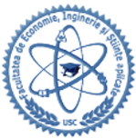

- BINE ATI VENIT LA UNIVERSITATEA DE STAT "BOGDAN PETRICEICU HASDEU" DIN CAHUL

Fiind studentul nostru vei benificia de:
- Personal didactic universitar profesionist, entuziast și deschis spre provocările noii generații;
- Forme moderne, interactive de predare atât la cursuri, cât și la seminare, sau laboratoare, prin prezentări PowerPoint, dezbateri, studii de caz, proiecte, cursuri online plasate pe platforma Moodle a USC, evaluări on-line, etc.;
- Săli de curs și seminar luminoase, spațioase și comod amenajate, dotate cu table multimedia, video proiectoare, ecrane de proiecție;
- Biblioteca și sala de lectură dotată cu spectru larg de cărți de specialitate, precum și conexiunea la rețea locală WI-FI cu acces la internet;
- Posibilitatea obținerii de burse de studii sau sociale, burse de merit oferite guvern;
- Posibilitatea paricipării în mobilitatea studenților oferită de programul Erasmus + , precum și posibilitatea obținerii de burse pentru studii și practică în străinătate;
- Posibilitatea continuării studiilor prin înscrierea la masteratele organizate la USC;
- Participarea la cercuri studențești de cercetare științifică și alte manifestări cum ar fi “Roboclub” etc.;
- Cazarea în căminile studențești ale universității, dotate cu bucătării, săli de lectură, săli de calculatoare conectate la internet;
- Suportul în angajare la finalizarea studiilor oferit de Centrul SYSLAB.
Beneficiile specialității informaticii
- Oportunități de angajare: Industria IT este în continuă creștere și are nevoie de mai mulți profesioniști calificați, ceea ce înseamnă că există o mare cerere de specialiști în IT.
- Salarii competitive: Salariile din industria IT sunt adesea mai mari decât cele din alte domenii, datorită cererii ridicate pentru talente în acest domeniu.
- Flexibilitate: În industria IT există adesea opțiuni de lucru flexibile, inclusiv munca de acasă sau programul de lucru flexibil, permițând astfel un echilibru între viața profesională și personală.
- Inovație: Industria IT este în continuă evoluție, fiind mereu în căutare de noi tehnologii și soluții. Specializarea în IT poate oferi oportunități de a lucra cu tehnologii de vârf și de a fi implicat în proiecte inovatoare.
- Dezvoltare personală și profesională: Lucrul în industria IT poate fi o oportunitate de a învăța constant și de a se dezvolta profesional. De asemenea, poate fi o oportunitate de a lucra în echipă și de a dezvolta abilități de comunicare și lidership.
- Lucrul global: Industria IT este globală, iar specializarea în acest domeniu poate deschide oportunități de lucru la nivel internațional.
- Contribuție la societate: Tehnologia are un impact semnificativ asupra societății, iar specializarea în IT poate oferi oportunități de a contribui la dezvoltarea tehnologiilor care pot îmbunătăți viețile oamenilor și comunităților.